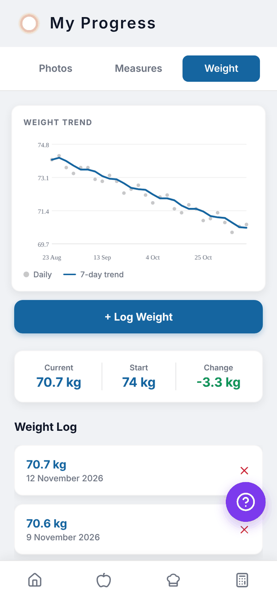
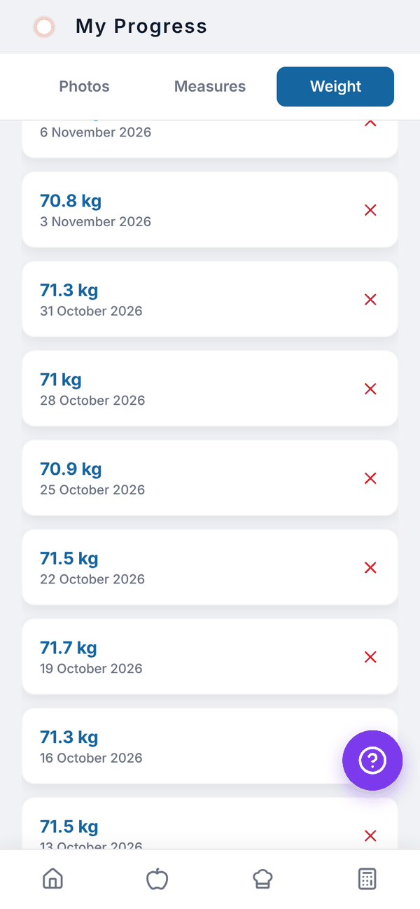
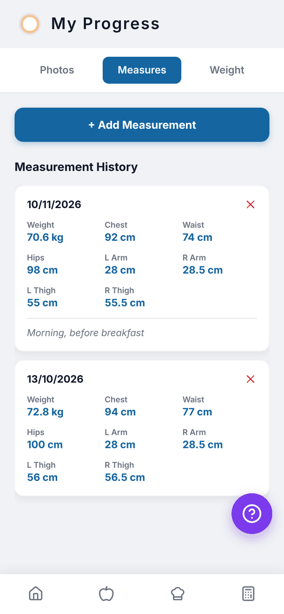
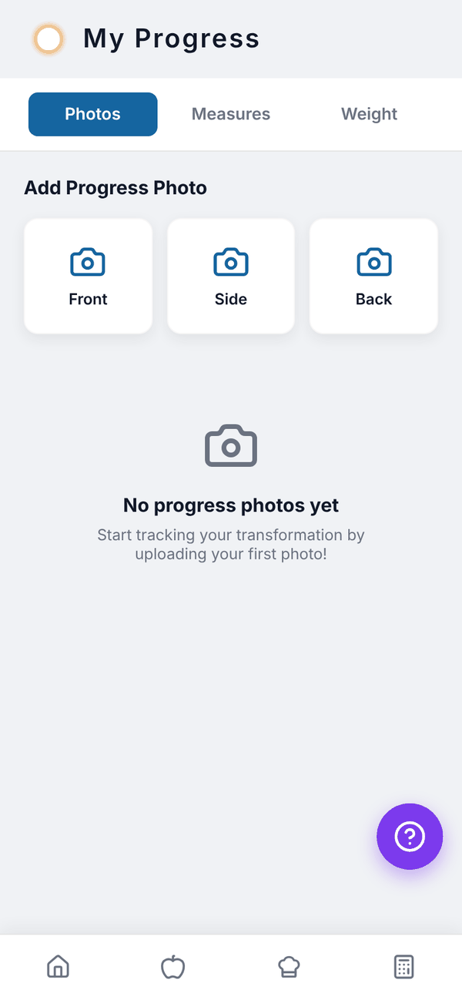

Totality Nutrition guide
Weight and Progress
Log your weight, see your weight trend, record body measurements and add progress photos.
Progress has three tabs: Photos, Measures and Weight. It's on Free, Trial and Paid. Open it from the Progress tile on Home.
Log your weight#
- Open Progress and tap Weight.
- Tap + Log Weight.
- Leave it on Absolute and type today's weight. Stone users get boxes for st and lb.
- Or switch to Change to log a change since your last weight, for example +0.7 or -0.5, using the quick 0.5 buttons if you like. "Will be logged as" shows the result.
- Tap Save.


You can log more than once a day; each is its own entry. The WEIGHT TREND chart shows each weigh-in and a 7-day trend line once you have at least two. Under it, Current, Start and Change sum up your progress.
Your goal weight shows as a line across the chart. Tap Change next to it, type a new goal and tap Save. To delete an entry, tap the red x in the Weight Log and confirm.
Body measurements#
- Tap Measures, then + Add Measurement.
- Fill in any of Weight, Chest, Waist, Hips, Left Arm, Right Arm, Left Thigh and Right Thigh, plus optional Notes.
- Tap Save.
Measurement History lists each set by date, newest first. Tap the red x to delete one. Tape measurements are in cm or inches, depending on your units.
Progress photos#
Tap Photos, then Front, Side or Back under Add Progress Photo, and pick a photo. It's saved with the date in Photo History.


Questions#
Do I need to log weight every day?
No, but the 7-day trend line is smoother with regular weigh-ins. Same time of day, same conditions, works best.
Who can see my progress photos?
You. If you also use Totality with a trainer, your trainer can see your weight, measurements and progress photos in Totality.
Does my weight change my targets?
Not by itself. The Calculator fills in your latest weight next time you open it, so tap Calculate and Save My Targets when you want new targets.